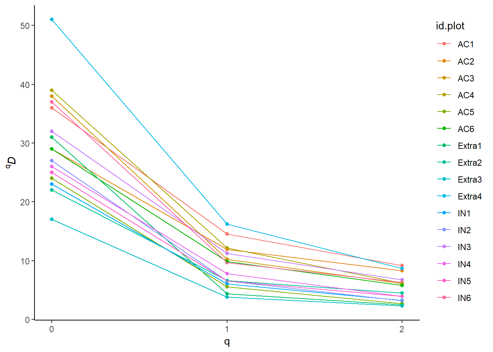

library(here)
library(tidyverse)
rm(list = ls())Analysis of Ecological Data
Hill numbers
1 Technichal University of Munich, TUM School of Life Sciences, Chair of Restoration Ecology, Emil-Ramann-Straße 6, 85354 Freising, Germany
 https://orcid.org/0000-0001-5372-4174
https://orcid.org/0000-0001-5372-4174


2 University of Applied Sciences Weihenstephan-Triesdorf, Institute of Ecology and Landscape, Am Hofgarten 1, Building A10, 85354 Freising, Germany
1 Learning outcomes
The students are able to…
- Calculate (3) species richness, Shannon and Simpson diversity and the effective number of species
The tutorial uses the tutorial of Zelený (2023)
2 Preparation
2.1 Load data
For some of the follow-up formulas, we will need the relative abundances \(p_{ij}\), so let’s prepare them:
species_ammer <- read_csv(
here("data", "processed", "data_processed_species_ammer_4.1.csv"),
col_names = TRUE, col_types = cols(
.default = "?",
accepted_name = "f"
)
) %>%
pivot_longer(-accepted_name, names_to = "plot_id", values_to = "abundance") %>%
filter(abundance > 0) %>%
group_by(plot_id) %>%
mutate(
abundance = abundance / 100, # Transform from percent to ratio
plot_abundance = sum(abundance), # Calculate vegetation cover of a plot
relative_abundance = abundance / plot_abundance # Calculate relative abundance
)
sites_ammer <- read_csv(
here("data", "processed", "data_processed_sites_ammer_4.3.csv"),
col_names = TRUE, col_types = cols(.default = "?")
)3 Effective number of species (ENS)
3.1 Calculation
Let’s first calculate the basic indices of diversity by hand: species richness, Shannon entropy index and Simpson’s concentration index:
species_richness <- species_ammer %>%
mutate(presence = if_else(abundance > 0, 1, 0)) %>%
summarise(species_richness = sum(presence))
shannon <- species_ammer %>%
summarise(shannon = -sum(relative_abundance * log(relative_abundance))) %>% # Calculate the Shannon diversity
mutate(
shannon_ens = exp(shannon), # Transform to effective number of species 1D
shannon = round(shannon, digits = 2),
shannon_ens = round(shannon_ens, digits = 2)
)
simpson <- species_ammer %>%
summarise(simpson = sum(relative_abundance^2)) %>% # Calculate the Simpson diversity
mutate(
simpson_ens = 1 / simpson, # Transform to effective number of species 2D
simpson = round(simpson, digits = 2),
simpson_ens = round(simpson_ens, digits = 3)
)Integrate your calculations in the sites dataset:
data <- sites_ammer %>%
left_join(species_richness, by = c("id.plot" = "plot_id")) %>% # you can join tables even if the columns are named differently
left_join(shannon, by = c("id.plot" = "plot_id")) %>%
left_join(simpson, by = c("id.plot" = "plot_id"))
sites_ammer <- data3.2 Show graph
We can plot the relationship of [q]D and q.
sites_ammer %>%
select(id.plot, species_richness, shannon_ens, simpson_ens) %>%
pivot_longer(-id.plot, names_to = "index", values_to = "qD") %>%
mutate(
q = str_replace(index, "species_richness", "0"),
q = str_replace(q, "shannon_ens", "1"),
q = str_replace(q, "simpson_ens", "2"),
q = as.double(q)
) %>%
ggplot(aes(x = q, y = qD, color = id.plot, group = id.plot)) +
geom_point() +
geom_line() +
scale_x_continuous(limits = c(0,2), breaks = seq(0, 10, 1)) +
labs(y = expression(""^"q"*italic(D))) +
theme_classic()
On the diversity profile above, we see the diversity values for the three main indices, species richness (0), Shannon diversity (1) and Simpson diversity (2). You can see that some lines are crossing. This means that some plots are more diverse when the richness of all species is considered, but when the focus is shifted on common or only dominant species (i.e. Shannon or Simpson diversity), other plots becomes more diverse. The main reason is the difference in species abundance distribution, i.e. that some plots have more even abundances than others.
3.3 Save
Now, save your updated sites table with the CWMs from the previous section and the ENSs of this section:
write_csv(
sites_ammer, here::here("data", "processed", "data_processed_sites_ammer_4.4.csv")
)Task
- Calculate the species richness and effective number of specie for Shannon and Simpson diversity for your own data.
sessionInfo()R version 4.4.2 (2024-10-31 ucrt)
Platform: x86_64-w64-mingw32/x64
Running under: Windows 11 x64 (build 26100)
Matrix products: default
locale:
[1] LC_COLLATE=German_Germany.utf8 LC_CTYPE=German_Germany.utf8
[3] LC_MONETARY=German_Germany.utf8 LC_NUMERIC=C
[5] LC_TIME=German_Germany.utf8
time zone: Europe/Berlin
tzcode source: internal
attached base packages:
[1] stats graphics grDevices datasets utils methods base
other attached packages:
[1] lubridate_1.9.4 forcats_1.0.0 stringr_1.5.1 dplyr_1.1.4
[5] purrr_1.0.2 readr_2.1.5 tidyr_1.3.1 tibble_3.2.1
[9] ggplot2_3.5.1 tidyverse_2.0.0 here_1.0.1
loaded via a namespace (and not attached):
[1] bit_4.5.0.1 gtable_0.3.6 jsonlite_1.8.9
[4] crayon_1.5.3 compiler_4.4.2 BiocManager_1.30.25
[7] renv_1.1.0 tidyselect_1.2.1 parallel_4.4.2
[10] scales_1.3.0 yaml_2.3.10 fastmap_1.2.0
[13] R6_2.5.1 labeling_0.4.3 generics_0.1.3
[16] knitr_1.49 htmlwidgets_1.6.4 munsell_0.5.1
[19] rprojroot_2.0.4 tzdb_0.4.0 pillar_1.10.1
[22] rlang_1.1.5 stringi_1.8.4 xfun_0.50
[25] bit64_4.6.0-1 timechange_0.3.0 cli_3.6.3
[28] withr_3.0.2 magrittr_2.0.3 digest_0.6.37
[31] grid_4.4.2 vroom_1.6.5 rstudioapi_0.17.1
[34] hms_1.1.3 lifecycle_1.0.4 vctrs_0.6.5
[37] evaluate_1.0.3 glue_1.8.0 farver_2.1.2
[40] colorspace_2.1-1 rmarkdown_2.29 tools_4.4.2
[43] pkgconfig_2.0.3 htmltools_0.5.8.1